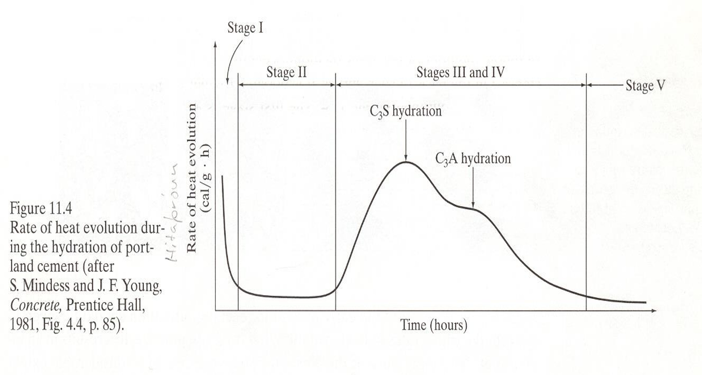
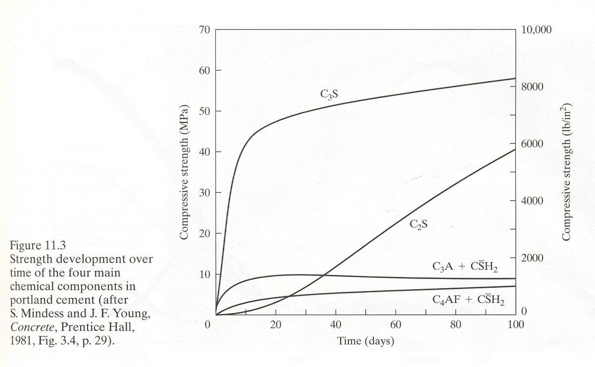
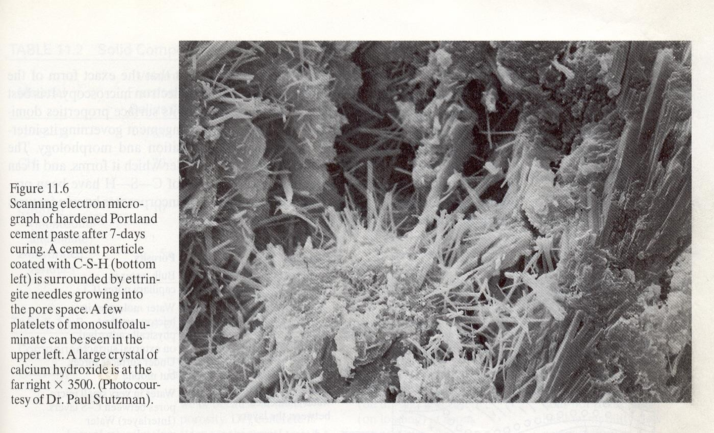
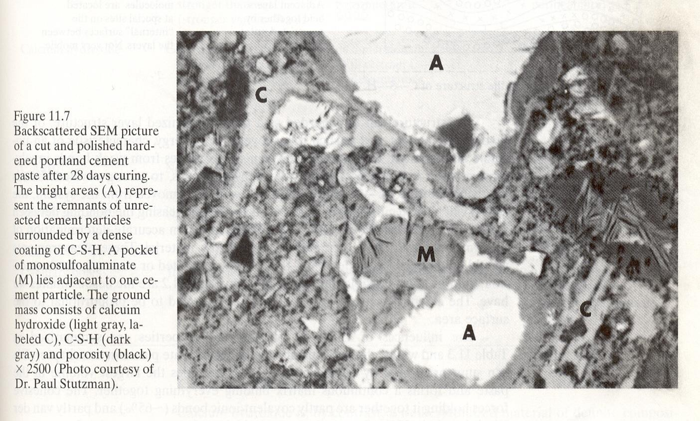
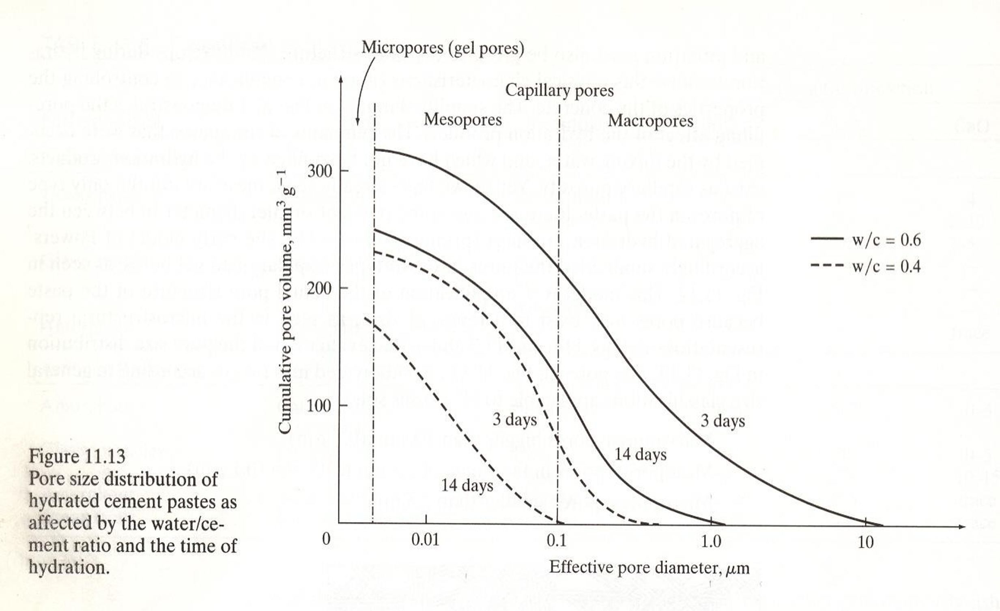
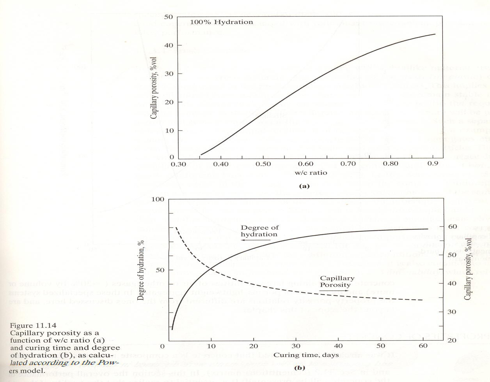
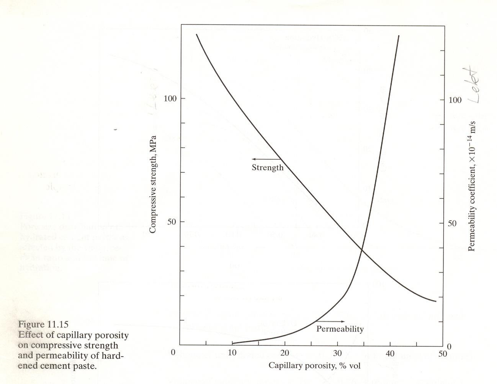

15. Kafli - Sement og bindiefni
Sement er fínmalað bindiefni sem hvarfast við vatn og harðnar. Þegar sementi og vatni er blandað saman myndast sementsefja. Við hvörfun sementsins breytist sementsefjan smám saman úr mótanlegu efni í fast efni.
Sement er eitt af grunnefnum steinsteypu. Þar myndar sementið ásamt vatni sementsefju sem umlykur steinefnin og bindur þau saman þegar hún harðnar. Til þess að skilja eiginleika steinsteypu er því mikilvægt að þekkja hvað sement er, hvernig það er framleitt og hvað gerist þegar sement hvarfast við vatn.
15.1. Portland sement og framleiðsla
Portland sement er algengasta tegund sements sem notuð er í byggingariðnaði. Það er framleitt úr hráefnum sem veita þau oxíð sem þarf til myndunar klinkerfasa sementsins. Helstu hráefnin eru:
kalksteinn, sem veitir CaO,
leir, sem veitir meðal annars SiO₂, Al₂O₃ og Fe₂O₃.
Á Íslandi voru áður notuð önnur hráefni við sementsframleiðslu. Þá var skeljasandur uppspretta CaO og líparít uppspretta SiO₂, Al₂O₃ og Fe₂O₃.
Við sementsframleiðslu eru hráefnin möluð og blönduð í réttum hlutföllum áður en þau eru brennd í ofni. Hitastig í ofninum getur orðið um 1500 °C. Við brennsluna hvarfast hráefnin og mynda svokallaðan klinker (sementsgjall).
Klinkerinn kemur úr ofninum sem kornótt efni, gjarnan með kornastærð um 3–25 mm. Hann er síðan malaður mjög fínt og gifsi bætt við. Við það fæst Portland sement. Kornastærð sements er á bilinu um 1–100 µm og meðalstærð um 10 µm.
Tvær meginleiðir hafa verið notaðar við undirbúning hráefnanna fyrir brennslu: þurraðferð og votaðferð. Munurinn felst fyrst og fremst í því í hvaða formi hráefnin fara inn í ofninn. Við þurraðferð eru þau þurr, en við votaðferð eru þau í leðjuformi.

|

|
Þurraðferð |
Votaðferð |
Á Íslandi var sement áður framleitt í Sementsverksmiðjunni á Akranesi. Þar var votaðferðin notuð og meðal hráefna voru skeljasandur og líparít. Sementsframleiðslu á Íslandi hefur nú verið hætt og sement er flutt inn.
15.2. Samsetning Portland sements
Við brennslu hráefnanna í ofninum myndast svokallaðir klinkerfasar (gjallarfasar). Fjórir klinkerfasar eru meginuppistaðan í Portland sementi:
\(C_3S\) – tríkalsíumsilikat (alit)
\(C_2S\) – tvíkalsíumsilikat (belit)
\(C_3A\) – tríkalsíumálat
\(C_4AF\) – tetrakalsíumálferrít
Í sementsefnafræði er algengt að nota stytt tákn fyrir þau oxíð sem mynda sementið. Til dæmis táknar \(C\) CaO, \(S\) SiO₂, \(A\) Al₂O₃ og \(F\) Fe₂O₃. Þannig er til dæmis hægt að rita tríkalsíumsilikat, \(3CaO \cdot SiO_2\), sem \(C_3S\).
15.2.1. Algeng tákn í sementsefnafræði
Tákn |
Efnaformúla |
Efni |
|---|---|---|
\(C\) |
\(CaO\) |
Kalsíumoxíð |
\(S\) |
\(SiO_2\) |
Kísildíoxíð |
\(A\) |
\(Al_2O_3\) |
Áloxíð |
\(F\) |
\(Fe_2O_3\) |
Járnoxíð |
\(H\) |
\(H_2O\) |
Vatn |
Helstu klinkerfasar Portland sements eru:
Tákn |
Efnaformúla |
Heiti |
|---|---|---|
\(C_3S\) |
\(3CaO \cdot SiO_2\) |
Tríkalsíumsilikat (alit) |
\(C_2S\) |
\(2CaO \cdot SiO_2\) |
Díkalsíumsilikat (belit) |
\(C_3A\) |
\(3CaO \cdot Al_2O_3\) |
Tríkalsíumálat |
\(C_4AF\) |
\(4CaO \cdot Al_2O_3 \cdot Fe_2O_3\) |
Tetrakalsíumálferrít |
15.3. Hvörfun sements
Þegar sementi er blandað við vatn hefjast efnahvörf milli vatnsins og klinkerfasa sementsins. Þessi efnahvörf nefnast hvörfun sements (e. hydration). Við hvörfunina myndast ný efnasambönd, svokallaðar hvörfunarafurðir (e. hydration products).
Myndin hér að neðan sýnir hvernig sementsefjan breytist eftir því sem hvörfuninni vindur fram. Ferlinu má lýsa í nokkrum skrefum:
Í upphafi er sementsefjan fljótandi og sementskornin eru aðskilin hvert frá öðru með vatni.
Hvörfunarafurðir byrja að myndast við yfirborð sementskornanna og vaxa út í rýmið á milli þeirra.
Þegar næg tenging hefur myndast milli hvörfunarafurðanna missir sementsefjan floteiginleika sína og storknun (e. setting) hefst.
Eftir því sem hvörfuninni vindur fram tengjast hvörfunarafurðirnar betur saman og sementsefjan verður stífari. Við lokastorknun (e. final set) er sementsefjan orðin að föstu efni, en styrkur hennar er enn lítill.
Eftir lokastorknun heldur hvörfunin áfram. Þá tekur við hörðnun (e. hardening) og styrkur sementsefjunnar eykst eftir því sem hvörfuninni vindur fram.

15.4. Hvörfunarafurðir
Klinkerfasarnir hvarfast við vatn á mismunandi hátt og mynda mismunandi hvörfunarafurðir. Mikilvægustu hvörfunarafurðirnar eru C-S-H hlaup, kalsíumhýdroxíð (CH), ettringít og monosulfoaluminat.
Gott að hafa í huga
Hlutföll hvörfunarafurðanna eru ekki föst. Þau ráðast meðal annars af samsetningu sementsins og hversu langt hvörfunin er gengin. Tölurnar hér að neðan eru dæmigerð gildi sem sýna hlutfallslegt vægi helstu hvörfunarafurðanna.
15.4.1. C-S-H hlaup og kalsíumhýdroxíð
Kalsíumsilikötin \(C_3S\) og \(C_2S\) hvarfast við vatn og mynda aðallega C-S-H hlaup og kalsíumhýdroxíð (CH).
C-S-H hlaup er mikilvægasta hvörfunarafurðin með tilliti til styrks sementsefjunnar. Það myndar þéttan massa sem tengir saman upphaflegu sementskornin eftir því sem hvörfuninni vindur fram. Í harðnaðri sementsefju er C-S-H hlaup um 65% af rúmmálinu.
Kalsíumhýdroxíð, (CH), er einnig nefnt portlandit. Það myndast sem stærri kristallar og er mun veikara en C-S-H. Kalsíumhýdroxíð er um 20% af rúmmáli harðnaðrar sementsefju.
Einfaldað má lýsa hvörfun kalsíumsilikatanna þannig:
þar sem \(H\) táknar vatn í styttu táknmáli sementsefnafræðinnar.
Athugið
Jöfnurnar eru einfölduð framsetning á hvörfuninni. Þær sýna hvaða meginhvörfunarafurðir myndast en eru ekki stilltar efnajöfnur. C-S-H hefur ekki eina fasta efnasamsetningu.
15.4.2. Ettringít og monosulfoaluminat
Tríkalsíumálat, \(C_3A\), hvarfast hratt við vatn. Gifs, sem bætt er við klinkerinn við mölun sementsins, tekur þátt í hvörfun \(C_3A\).
Við upphaf hvörfunarinnar myndast ettringít. Eftir því sem hvörfuninni vindur fram getur ettringít síðan hvarfast áfram við \(C_3A\) og myndað monosulfoaluminat.
Í harðnaðri sementsefju er monosulfoaluminat um 10% af rúmmálinu.
15.4.3. Hvörfun \(C_4AF\)
Ferrítfasinn, \(C_4AF\), tekur einnig þátt í hvörfun sementsins. Hvörfunarafurðir hans eru skyldar aluminathvörfunarafurðunum að uppbyggingu. Framlag þeirra til styrks er lítið.
Eftir því sem hvörfuninni vindur fram minnkar magn óhvarfaðs sements og magn hvörfunarafurða eykst. Þó er yfirleitt eitthvað óhvarfað sement eftir í harðnaðri sementsefju. Á myndinni hér að neðan má sjá magn hvörfunarafurða á mismunandi stigum hvörfunar. Takið eftir hvernig ettringít myndast en hvarfast síðan og hverfur þegar monosulfoaluminat fer að myndast.

15.5. Hraði hvörfunar og hitamyndun
Hvörfun sements við vatn er útvermið efnahvarf, það er að segja að við hvörfunina losnar varmi. Klinkerfasarnir hvarfast misjafnlega hratt og framlag þeirra til hitamyndunar er því mismunandi.
Myndin hér að neðan sýnir hitamyndun sements eftir að vatni hefur verið bætt við. Hitamyndunin breytist verulega með tíma og endurspeglar mismunandi stig hvörfunarinnar.


Eftir fyrstu hröðu hvörfunina tekur við tímabil þar sem hvörfunarhraðinn er lítill. Þetta tímabil er mikilvægt í framkvæmd þar sem sementsefjan helst þá enn mótanleg áður en storknun hefst.
15.5.1. Áhrif \(C_3S\) og \(C_2S\)
Kalsíumsilikötin \(C_3S\) og \(C_2S\) hafa mikil áhrif á styrkþróun sementsefjunnar, en þau hvarfast mishratt.
\(C_3S\) hvarfast hraðar og hefur því sérstaklega áhrif á styrkþróun fyrstu dagana. Hvörfun þess veldur jafnframt meiri hitamyndun.
\(C_2S\) hvarfast hægar og framlag þess til styrks kemur því fram á lengri tíma.


Fínleiki sements hefur einnig áhrif á hraða hvörfunarinnar. Eftir því sem sementskornin eru fínni verður samanlagt yfirborðsflatarmál þeirra meira og hvörfunin getur því gengið hraðar. Fínna sement tengist því hraðari hitamyndun en grófara sement.
15.5.2. Áhrif \(C_3A\)
\(C_3A\) hvarfast mjög hratt. Gifs er því mikilvægt í Portland sementi þar sem það hefur áhrif á hvörfun \(C_3A\) og þar með storknunarferlið.
Án gifs getur hvörfun \(C_3A\) orðið mjög hröð og sementsefjan storknað á mjög skömmum tíma.
Ferrítfasinn \(C_4AF\) hvarfast hægar en \(C_3A\). Járninnihald hans tengist jafnframt gráum lit Portland sements.
Hvörfun sements heldur áfram eftir storknun og örbygging sementsefjunnar breytist því áfram með tíma. Á myndunum hér að neðan má bera saman sementsefju eftir 7 daga og 28 daga.
 |
 |
7 dagar |
28 dagar |


15.6. V/s-tala og holrýmd sementsefju
Magn vatns í sementsefju hefur mikil áhrif á uppbyggingu hennar eftir hörðnun. Hlutfall vatns og sements er gefið upp með svokallaðri v/s-tölu, sem er hlutfall massa vatns og massa sements:
þar sem \(m_v\) er massi vatns og \(m_s\) er massi sements.
Vatnið í sementsefjunni gegnir mikilvægu hlutverki í hvörfun sementsins. Ekki verður þó allt upphaflegt rúmmál vatnsins að föstu efni við hvörfunina. Eftir því sem hvörfuninni vindur fram myndast hvörfunarafurðir, en jafnframt verða eftir holrými í sementsefjunni.
Því hærri sem v/s-talan er, því meiri verður holrýmd harðnaðrar sementsefju. Á myndinni hér að neðan má sjá dreifingu holrýmis í sementsefju með v/s-tölu 0,4 og 0,6 eftir 3 og 14 daga. Bæði v/s-talan og tími hvörfunar hafa áhrif á magn og stærð póranna.


Mynd 15.1 Áhrif v/s-tölu og tíma hvörfunar á dreifingu holrýmis í sementsefju.
Eftir því sem hvörfun sementsins heldur áfram eykst magn hvörfunarafurða og holrýmd sementsefjunnar minnkar. Sambandið milli v/s-tölu, hvörfunar og holrýmdar má sjá á myndinni hér að neðan.


Mynd 15.2 Áhrif v/s-tölu og hvörfunar á holrýmd sementsefju.
15.6.1. Holrýmd og eiginleikar sementsefju
Holrýmd sementsefjunnar hefur mikil áhrif á eiginleika hennar. Myndin hér að neðan sýnir samband holrýmdar annars vegar og þrýstistyrks og lektar hins vegar. Með aukinni holrýmd minnkar þrýstistyrkur, en lekt eykst.


Mynd 15.3 Áhrif holrýmdar á þrýstistyrk og lekt harðnaðrar sementsefju.
V/s-talan hefur því áhrif á eiginleika efnisins í gegnum þá holrýmd sem myndast í sementsefjunni. Lág v/s-tala tengist minni holrýmd, en há v/s-tala meiri holrýmd.
Þegar sementsefjan er hluti af steinsteypu hefur þetta síðan áhrif á eiginleika steinsteypunnar. Fjallað verður nánar um þau áhrif í næsta kafla.
Gott að muna
Hærri v/s-tala → meiri háræðaholrýmd → minni styrkur og meiri lekt.
V/s-talan hefur því áhrif á eiginleika steinsteypu í gegnum örbyggingu sementsefjunnar.
15.7. Sementsgerðir
Eiginleikar sements ráðast meðal annars af samsetningu klinkerfasanna, fínleika sementsins og þeim efnum sem bætt er við það. Með því að breyta þessum þáttum er hægt að framleiða sement með mismunandi eiginleika og fyrir mismunandi notkun.
15.7.1. Hraðharðnandi Portland sement
Hraðharðnandi Portland sement er ætlað til notkunar þar sem mikill byrjunarstyrkur er æskilegur. Það getur meðal annars verið hentugt við sprautusteypu í jarðgöngum.
Hraðharðnandi sement hefur gjarnan hátt hlutfall \(C_3S\) og er fínmalað. Hvort tveggja tengist hraðari hvörfun og meiri hitamyndun. Af þeim sökum er slíkt sement síður hentugt í massasteypu þar sem mikil hitamyndun getur verið óæskileg.
15.7.2. Lághita Portland sement
Lághita Portland sement er ætlað til notkunar þar sem mikilvægt er að takmarka hitamyndun, til dæmis í massasteypu. Það hefur minna hlutfall \(C_3S\) og \(C_3A\) en meira hlutfall \(C_2S\). Sementskornin geta einnig verið grófari.
Hér á landi voru áður framleiddar tvær tegundir lághitasements:
Blöndusement
Sigöldusement
15.7.3. Súlfatþolið sement
Súlfatþolið sement er ætlað til notkunar þar sem súlföt eru til staðar í umhverfinu. Í slíku sementi er hlutfall \(C_3A\) lágt.
Súlfatþolið sement var áður framleitt á Íslandi.
15.7.4. Hvítt og litað Portland sement
Hvítt Portland sement er framleitt úr hráefnum með litlu magni járn- og magnesíumoxíða.
Litað sement er framleitt með því að bæta fínmöluðum litarefnum við sementið. Litarefnin geta haft áhrif á eiginleika efnisins og þarf því að taka tillit til þeirra við notkun.
15.8. Íaukar og önnur bindiefni
Portland sement er ekki eina efnið sem getur tekið þátt í myndun bindiefnis í steinsteypu. Ýmis önnur efni má nota ásamt Portland sementi og draga þannig úr því magni Portland sements sem þarf í bindiefnið. Slík efni eru oft kölluð íaukar eða supplementary cementitious materials (SCM).
Dæmi um slík efni eru:
kísilryk (e. silica fume),
flugaska (e. fly ash),
slagg (e. blast-furnace slag),
malað líparít eða aðrir possolanar,
malað kalk.
Íaukar hafa mismunandi uppruna og eiginleika. Sumir eru aukaafurðir frá öðrum iðnaði, til dæmis kísilryk, flugaska og slagg, en einnig er hægt að nýta náttúruleg efni með hentuga eiginleika. Sumir þeirra hvarfast hægar en Portland sement. Slík efni geta því meðal annars hentað þegar æskilegt er að draga úr hitamyndun, til dæmis í massasteypu.
Possolanar hafa ekki sömu bindieiginleika og Portland sement einir og sér. Þeir geta hins vegar hvarfast við kalsíumhýdroxíð (CH), sem myndast við hvörfun sementsins, og myndað frekari bindandi hvörfunarafurðir, meðal annars C-S-H.
15.8.1. Kolefnisspor sements
Framleiðsla Portland sements hefur töluvert kolefnisspor. Stór hluti losunarinnar tengist framleiðslu klinkers. Þar kemur losunin bæði frá orkunni sem þarf til þess að hita hráefnin upp í hátt hitastig og frá efnahvörfum hráefnanna við framleiðslu klinkers.
Ein leið til þess að draga úr kolefnisspori bindiefnis er því að minnka magn klinkers með því að nota önnur bindiefni eða íauka samhliða Portland sementi. Með því er hægt að minnka það magn Portland sements sem þarf án þess að hætta að nýta eiginleika þess sem bindiefnis.
Hvaða efni henta sem íaukar ræðst meðal annars af eiginleikum þeirra og aðgengi. Hefðbundnir íaukar á borð við flugösku og slagg eru aukaafurðir tiltekinnar iðnaðarstarfsemi og framboð þeirra er því háð þeirri starfsemi. Af þeim sökum er einnig leitað að öðrum efnum sem geta að hluta komið í stað Portland sements.
15.8.2. Breyttar áherslur í kröfum til steinsteypu
Aukin notkun íauka og annarra bindiefna endurspeglast einnig í breytingum á kröfum til steinsteypu. Áherslan færist í auknum mæli frá því að líta eingöngu á magn Portland sements yfir í að líta á bindiefnið í heild.
Í íslensku byggingarreglugerðinni eru til dæmis settar kröfur um lágmarksbindiefnainnihald steinsteypu, gefið upp í kg/m³, fyrir mismunandi áreitisflokka. Með bindiefni er þannig hægt að taka tillit til fleiri efna en Portland sements eins og sér.
Svipaða þróun má sjá í nýjustu útgáfu steypustaðalsins ÍST EN 206-1:2026. Þar er bindiefni (e. binder) skilgreint sem sement, samsetning sementstegunda eða samsetning sements og íauka. Hlutfall vatns og bindiefnis er þá gefið með v/b-tölu (e. water/binder ratio) í stað þess að horfa eingöngu til v/s-tölu.
Þessi breyting er mikilvæg þegar hluta Portland sements er skipt út fyrir önnur bindiefni. Þá lýsir v/s-talan ekki lengur ein og sér hlutfalli vatns og þeirra efna sem taka þátt í myndun bindiefnisins.
Gott að muna
v/s-tala miðar við vatn og sement.
v/b-tala miðar við vatn og bindiefnið í heild, þegar fleiri efni en Portland sement eru hluti af bindiefninu.
15.8.3. Íslenskir possolanar
Náttúrulegir possolanar eru eitt dæmi um efni sem hægt er að nota sem íauka. Á Íslandi er sérstakur áhugi á þessum möguleika vegna þess að hér finnast gosafurðir sem geta haft possolanska eiginleika.
Rannsóknir hafa verið gerðar á notkun íslenskra eldfjallapossolana (e. Icelandic volcanic pozzolan) sem íauka í bindiefni. Markmiðið er meðal annars að nýta staðbundið hráefni til að minnka hlutfall Portland sements og þar með kolefnisspor bindiefnisins.
15.9. Frá sementi til steinsteypu
Í þessum kafla hefur verið fjallað um hvernig Portland sement er framleitt, úr hvaða klinkerfösum það er samsett og hvernig það hvarfast við vatn. Við hvörfunina myndast hvörfunarafurðir sem byggja smám saman upp fasta sementsefju.
Samsetning sementsins, hraði hvörfunarinnar og v/s-talan hafa áhrif á uppbyggingu og holrýmd sementsefjunnar. Sementsefjan er síðan sá hluti steinsteypunnar sem bindur steinefnin saman.
Í næsta kafla er byggt á þessum grunni og fjallað um ferska og harðnaða steinsteypu og eiginleika hennar.